Sử dụng Container
Anchor là cách hiệu quả để xử lý các tỷ lệ khung hình khác nhau trong việc hỗ trợ nhiều độ phân giải cơ bản cho GUI.
Với các giao diện người dùng phức tạp hơn, chúng có thể trở nên khó sử dụng.
Điều này thường xảy ra với các game như RPG, trò chuyện trực tuyến, game tycoon hoặc mô phỏng. Một trường hợp phổ biến khác cần các tính năng bố cục nâng cao hơn là các công cụ trong game (hoặc đơn giản chỉ là công cụ).
Tất cả các tình huống này đòi hỏi một giao diện người dùng mạnh mẽ hơn, giống hệ điều hành, với bố cục và định dạng nâng cao. Khi đó, Container hữu ích hơn.
Bố cục container
Container mang lại khả năng bố cục rất mạnh (ví dụ, giao diện người dùng của trình chỉnh sửa Godot được xây dựng hoàn toàn bằng chúng):

Khi dùng một node kế thừa từ Container, tất cả các node Control con sẽ từ bỏ khả năng tự định vị. Điều này nghĩa là Container sẽ điều khiển vị trí của chúng, và mọi nỗ lực thay đổi thủ công các node này sẽ bị bỏ qua hoặc bị vô hiệu hóa ở lần tiếp theo node cha thay đổi kích thước.
Tương tự, khi một node kế thừa từ Container thay đổi kích thước, tất cả các node con của nó sẽ được định vị lại theo nó, với hành vi tùy thuộc vào loại container được dùng:

Ví dụ HBoxContainer thay đổi kích thước các nút con.
Sức mạnh thực sự của container là chúng có thể lồng nhau (dưới dạng node), cho phép tạo các bố cục rất phức tạp mà vẫn thay đổi kích thước dễ dàng.
Tùy chọn kích thước
Khi thêm một node vào container, cách container xử lý từng node con phụ thuộc chủ yếu vào tùy chọn định kích thước trong container của chúng. Bạn có thể tìm thấy các tùy chọn này bằng cách xem phần bố cục (layout) của bất kỳ Control nào là con của một Container.
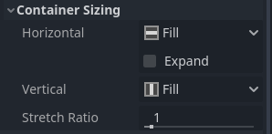
Các tùy chọn định kích thước độc lập cho chiều dọc và chiều ngang, và không phải container nào cũng sử dụng chúng (nhưng hầu hết đều có):
Fill: Đảm bảo control lấp đầy vùng được chỉ định trong container. Bất kể control có mở rộng hay không (xem bên dưới), nó chỉ lấp đầy vùng được chỉ định khi tùy chọn này được bật (mặc định là bật).
Expand: Cố gắng sử dụng càng nhiều không gian càng tốt trong container cha (theo từng trục). Các control không mở rộng sẽ bị các control mở rộng đẩy ra. Giữa các control mở rộng, lượng không gian chúng chiếm so với nhau được xác định bởi Stretch Ratio (xem bên dưới). Tùy chọn này chỉ khả dụng khi Container cha thuộc loại phù hợp, ví dụ HBoxContainer có tùy chọn này cho định kích thước theo chiều ngang.
Shrink Begin Khi mở rộng, cố gắng giữ ở bên trái hoặc phía trên của vùng mở rộng.
Shrink Center Khi mở rộng, cố gắng giữ ở giữa vùng mở rộng.
Shrink End Khi mở rộng, cố gắng giữ ở bên phải hoặc phía dưới của vùng mở rộng.
Stretch Ratio: Tỷ lệ không gian khả dụng mà các control mở rộng chiếm so với nhau. Một control có giá trị "2" sẽ chiếm gấp đôi không gian khả dụng so với control có giá trị "1".
Bạn nên thử nghiệm với các cờ này và các container khác nhau để hiểu rõ hơn cách chúng hoạt động.
Các loại container
Godot cung cấp sẵn một số loại container, mỗi loại phục vụ mục đích khác nhau:
Box Container
Sắp xếp các control con theo chiều dọc hoặc chiều ngang (thông qua HBoxContainer và VBoxContainer). Theo hướng ngược lại với hướng được chỉ định (tức là chiều dọc đối với container ngang), nó chỉ đơn giản mở rộng các node con.
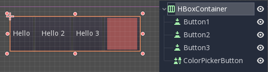
Các container này sử dụng thuộc tính Stretch Ratio cho các node con được đặt cờ Expand.
Grid Container
Sắp xếp các control con theo bố cục lưới (thông qua GridContainer, cần chỉ định số cột). Sử dụng cả cờ mở rộng theo chiều dọc và chiều ngang.
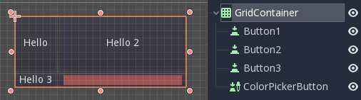
Margin Container
Các control con được mở rộng về phía biên của control này (thông qua MarginContainer). Phần đệm (padding) sẽ được thêm vào lề tùy theo cấu hình theme.

Một lần nữa, hãy nhớ rằng lề là một giá trị Theme, nên cần chỉnh sửa chúng từ phần ghi đè hằng số (constants overrides) của mỗi control:
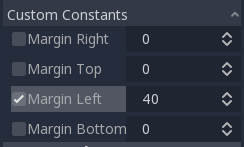
Tab Container
Cho phép bạn đặt nhiều control con xếp chồng lên nhau (thông qua TabContainer), chỉ control hiện tại được hiển thị.
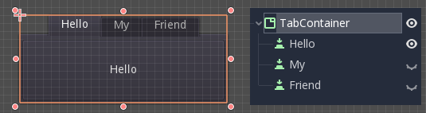
Việc thay đổi control hiện tại được thực hiện bằng cách nhấp vào các tab nằm ở phía trên container:
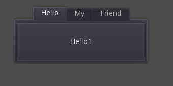
Mặc định, tiêu đề được tạo từ tên node (mặc dù có thể ghi đè chúng thông qua API của TabContainer).
Các cài đặt như vị trí tab và StyleBox có thể được chỉnh sửa trong phần ghi đè theme của TabContainer.
Split Container
Sắp xếp các control con theo chiều dọc hoặc chiều ngang và tạo các thanh kéo (grabber) giữa chúng (thông qua HSplitContainer và VSplitContainer). Tôn trọng cả cờ mở rộng theo chiều ngang và chiều dọc, cũng như Stretch Ratio.
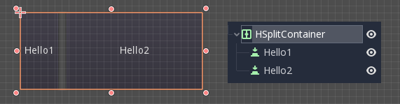
Bạn có thể kéo các thanh kéo để thay đổi tương quan kích thước giữa các node con:
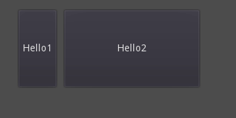
PanelContainer
Một container vẽ một StyleBox, sau đó mở rộng các node con để phủ toàn bộ diện tích của nó (thông qua PanelContainer, tôn trọng lề của StyleBox). Nó tôn trọng cả tùy chọn định kích thước theo chiều ngang và chiều dọc.
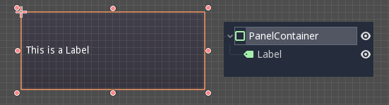
Container này hữu ích khi dùng làm control cấp cao nhất, hoặc chỉ để thêm nền tùy chỉnh cho các phần của bố cục.
FoldableContainer
Một container có thể mở rộng/thu gọn (thông qua FoldableContainer). Các control con bị ẩn khi nó được thu gọn.
ScrollContainer
Chỉ chấp nhận một node con duy nhất. Nếu node con lớn hơn container, thanh cuộn sẽ được thêm vào để cho phép kéo node đó xung quanh (thông qua ScrollContainer). Cả tùy chọn kích thước theo chiều dọc và chiều ngang đều được tôn trọng, và hành vi này có thể được bật hoặc tắt cho từng trục trong phần thuộc tính.

Con lăn chuột và kéo bằng cảm ứng (khi có cảm ứng) cũng là những cách hợp lệ để di chuyển control con.

Như trong ví dụ trên, một trong những cách phổ biến nhất để dùng container này là kết hợp với một VBoxContainer làm node con.
AspectRatioContainer
Một loại container sắp xếp các control con theo cách tự động giữ nguyên tỷ lệ của chúng khi container thay đổi kích thước (thông qua AspectRatioContainer). Nó có nhiều chế độ co giãn, cung cấp các tùy chọn điều chỉnh kích thước control con so với container: "fill," "width control height," "height control width," và "cover."

Nó hữu ích khi bạn có một container cần linh động và thích ứng với các kích thước màn hình khác nhau, và bạn muốn các phần tử con co giãn theo tỷ lệ mà không mất đi hình dạng mong muốn.
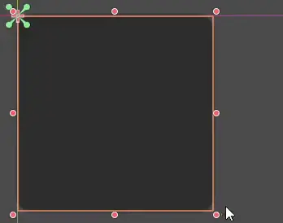
FlowContainer
FlowContainer là container sắp xếp các control con theo chiều ngang hoặc chiều dọc (thông qua HFlowContainer và VFlowContainer). Khi hết không gian khả dụng, nó sẽ đẩy các node con xuống dòng hoặc cột tiếp theo, tương tự cách văn bản xuống dòng trong một cuốn sách.

Nó hữu ích để tạo các bố cục linh hoạt, trong đó các control con tự động điều chỉnh theo không gian khả dụng mà không chồng lên nhau.

CenterContainer
CenterContainer là container tự động giữ tất cả các control con ở giữa nó với kích thước tối thiểu. Nó đảm bảo các control con luôn được căn giữa, giúp tạo bố cục căn giữa dễ dàng hơn mà không cần định vị thủ công (thông qua CenterContainer).
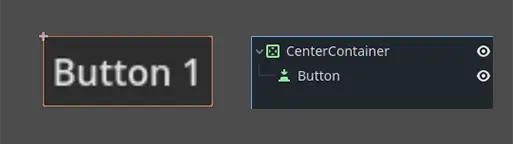

SubViewportContainer
Đây là một control đặc biệt chỉ chấp nhận một node Viewport duy nhất làm node con, và sẽ hiển thị nó như thể đó là một hình ảnh (thông qua SubViewportContainer).
Tạo Container tùy chỉnh
Bạn có thể tạo container tùy chỉnh bằng script. Dưới đây là ví dụ về một container làm các node con vừa khít với kích thước của nó:
extends Container
func _notification(what):
if what == NOTIFICATION_SORT_CHILDREN:
# Must re-sort the children
for c in get_children():
# Fit to own size
fit_child_in_rect(c, Rect2(Vector2(), size))
func set_some_setting():
# Some setting changed, ask for children re-sort.
queue_sort()
using Godot;
public partial class CustomContainer : Container
{
public override void _Notification(int what)
{
if (what == NotificationSortChildren)
{
// Must re-sort the children
foreach (Control c in GetChildren())
{
// Fit to own size
FitChildInRect(c, new Rect2(new Vector2(), Size));
}
}
}
public void SetSomeSetting()
{
// Some setting changed, ask for children re-sort.
QueueSort();
}
}